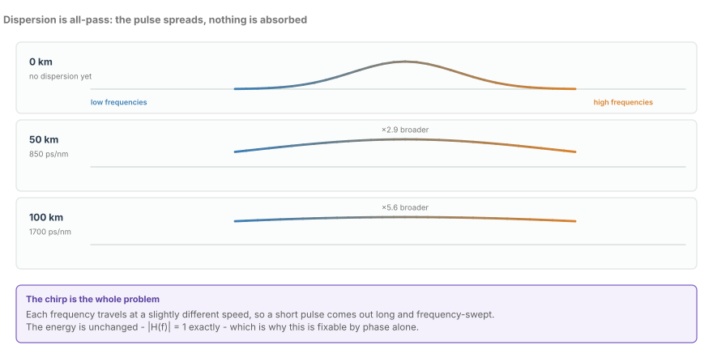
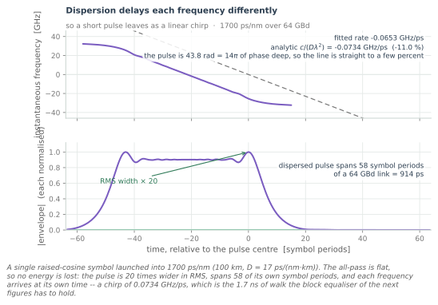
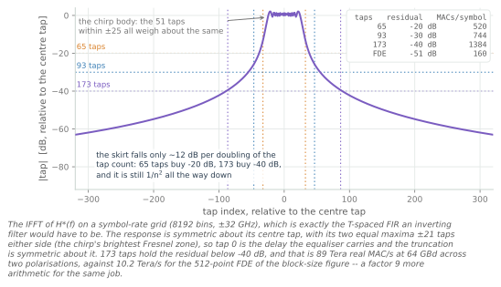
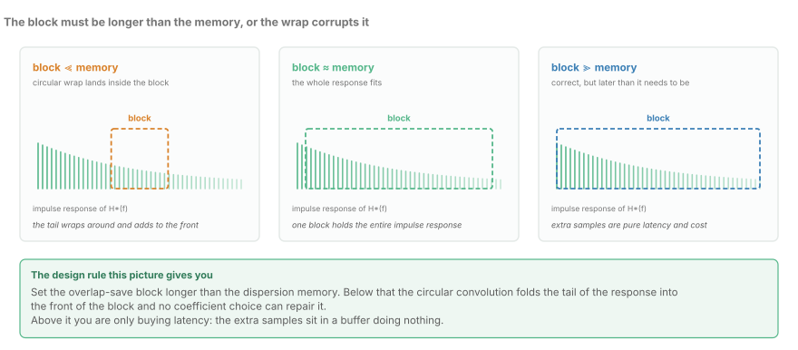
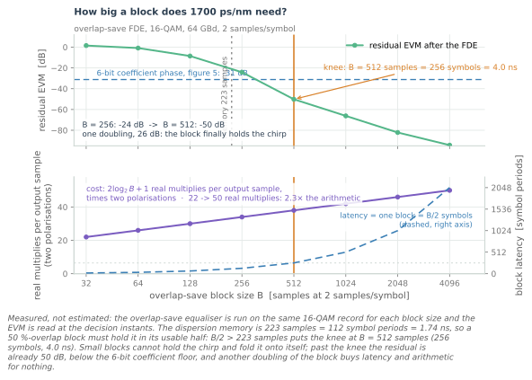
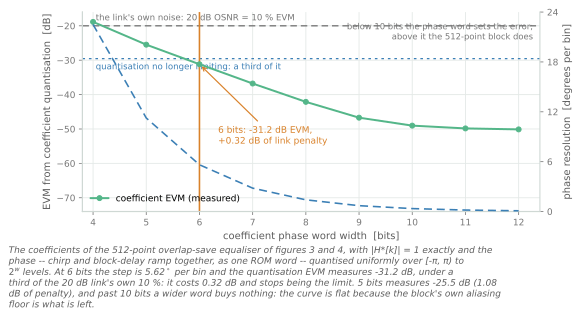
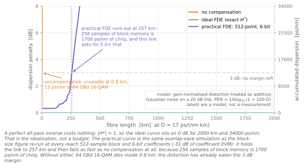

Chromatic Dispersion and the Frequency-Domain Equaliser
Dispersion as an all-pass phase curve, why time-domain equalisation loses to overlap-save FFT, and the block-size maths that decides it.
A hundred kilometres of standard single-mode fibre costs a 64 GBd 16-QAM channel 1700 ps/nm of chromatic dispersion and charges it nothing else. Not one photon is absorbed. The magnitude response is flat to the last bit of floating-point precision, the pulse leaves with exactly the energy it went in with, and the eye is shut. Every other impairment on this blog either adds noise or throws signal away; chromatic dispersion only rotates phase, and the rotation is a smooth, monotone, known function of frequency. It is the one large impairment in a coherent receiver that is, in principle, perfectly invertible.
That is why the interesting question is not whether to undo it but what shape of arithmetic to undo it with — and the answer is lopsided. The exact inverse of a 1700 ps/nm channel needs a symbol-spaced FIR of 193 taps to hold its residual below −40 dB, and that filter costs 98.8 Tera real MAC/s at 64 GBd across two polarisations. A 512-point overlap-save FDE does the same job for 4.86 Tera/s. Same impairment, same answer, twenty times less arithmetic — and the reason is not that the FFT is clever. It is that the filter is static.
The all-pass that closes the eye

As a baseband filter on the frequency offset from the optical carrier, chromatic dispersion is
with $D$ the dispersion parameter in ps/(nm·km), $L$ the fibre length in km, and $\lambda$ the carrier wavelength. The magnitude of that expression is exactly one at every frequency. Not approximately, not to within a ripple specification — one. The phase is quadratic, and the whole impairment lives in it.
Put numbers on it. Standard single-mode fibre at 1550 nm has $D = 17$ ps/(nm·km), so 100 km accumulates 1700 ps/nm. In SI that is 1.7 s/m, because 1 ps/nm is exactly $10^{-3}$ s/m. At the edge of the 32 GHz band the phase has reached 43.8 rad, which is 14π — seven full turns each way, and the sign flips with frequency.
The diagram shows what that means for one short pulse. At 50 km the envelope is about 2.9 times wider; at 100 km, about 5.6. Those are illustrative Gaussian widths, and the next figure measures the same broadening properly on the actual raised-cosine symbol the link transmits. The point they share is the one worth holding onto: nothing was lost, and the pulse is still unrecognisable. An impairment that conserves energy can still destroy a link, and this is the cleanest example of it in the whole receiver.
The judgement here is blunt and it does not change for the rest of the chapter: dispersion is the one impairment you should never track adaptively. It is known from the route, it changes only when the route changes, and it is identical on both polarisations to within the polarisation-mode dispersion that the butterfly handles separately. Estimate $D \cdot L$ once from the fibre type and the span lengths and hold it. The hard part is knowing the number, not undoing it.
A quadratic phase is a straight line in delay

The group delay is the derivative of the phase, and the derivative of a parabola is a straight line:
Different frequencies therefore arrive at different times, in proportion to their offset from the carrier. That is a chirp, and unlike most uses of the word this one is exactly linear: a quadratic spectral phase is a linear group delay is a linear frequency sweep in time. At 1700 ps/nm, $\beta = 1.36 \times 10^{-20}$ s², which makes the sweep rate $1/\beta = 0.0734$ GHz/ps, or 73.4 GHz/ns. Equivalently, the delay slope is 13.6 ps per GHz.
Figure 2 measures both halves of that claim. The fitted sweep rate over a ±30 symbol window comes out at 0.0653 GHz/ps against the analytic 0.0734 — 11% low, and the gap is a property of the estimator rather than of the fibre. A ±30 symbol window does not cover a chirp that spans ±56, and the raised-cosine roll-off at the band edge is where the stationary-phase argument is weakest. Fit over the whole pulse and the line comes back straighter.
The envelope panel is the number to carry. A launched raised-cosine symbol has an RMS width of 0.80 symbol periods. After 1700 ps/nm it is 15.8 symbol periods wide — a factor of 20 — and 58.5 symbol periods, 914 ps, hold its middle 99%. Multiplying the sweep rate by the sampled bandwidth gives the same answer from the other direction: 73.4 GHz/ns across 128 GSa/s is 1.74 ns of walk, which is 223 samples or 112 symbol periods. The dispersion memory is the chirp rate times the bandwidth, and at 1700 ps/nm that is a 1.74 ns channel.
What the same filter costs in time-domain taps

Undo dispersion in the time domain and you need a filter as long as the channel it inverts. Sampling $H^{*}(f)$ on a symbol-rate grid and taking the inverse transform gives exactly that filter, and its shape is not a decaying exponential the way a well-behaved channel's is. It is a chirp: a body of about 110 taps of nearly equal weight, bounded by a skirt that falls roughly 12 dB per doubling of tap count.
That skirt is what decides the tap count, and it decides it expensively. Figure 3 measures the smallest odd tap count whose truncated filter leaves the residual ISI below a target:
| Residual | Taps | Span | Measured | Real MAC/symbol | At 64 GBd, two polarisations |
|---|---|---|---|---|---|
| −20 dB | 101 (±50) | 1578 ps | −21.3 dB | 808 | 51.7 Tera/s |
| −30 dB | 125 (±62) | 1953 ps | −31.0 dB | 1000 | 64.0 Tera/s |
| −40 dB | 193 (±96) | 3016 ps | −40.4 dB | 1544 | 98.8 Tera/s |
The arithmetic is four real multiplies per complex MAC, two polarisations, at 64 GBd. The 193-tap filter that reaches −40 dB is 3016 ps of impulse response — nearly five times the symbol period, and the full width of the dispersion memory plus the skirt that the truncation is fighting.
That is the number the FDE has to beat, and it beats it easily. A 512-point overlap-save FDE costs $2\log_2 B + 1 = 19$ real multiplies per output sample per polarisation, which is 38 across two polarisations, or 76 real MACs per symbol at 2 samples per symbol: 4.86 Tera/s. The time-domain filter is 20.3 times more arithmetic for the same residual.
The honest reading of Figure 3 is that the tap-versus-residual curve has no knee. There is no length at which the time-domain equaliser becomes reasonable: the body alone is 110 taps of full-weight multiplies, and you pay for them whether or not you need the skirt. A 20-tap adaptive butterfly is already 320 real multiplies per symbol, 20.5 Tera/s — four times the whole FDE.
Overlap-save: discard the wrap, do not repair it

An $N$-point FFT turns an $N$-tap convolution from $N$ multiplies per sample into about $\log_2 N$, and dispersion compensation is the textbook case where that trade is overwhelming. The equaliser is one complex multiply per bin:
There is no adaptation, no error term, no gradient — just a pointwise product by a coefficient vector that was computed once.
The catch is the boundary. Two multiplied DFTs give a circular convolution: the tail of the response wraps around and adds to the front of the block, at the same size as the signal rather than as a rounding error. Overlap-save does not repair that arithmetic and does not try. It feeds the block $N$ samples whose first $N/2$ are the previous block's second half, transforms, multiplies, inverse-transforms, and discards the first $N/2$ outputs, keeping the second half. The corrupted half is thrown away rather than corrected, and the 50% overlap is the price of never having to think about the boundary again.
That gives the one hard design rule in this chapter: the block's usable half, $N/2$ samples, must be at least as long as the dispersion memory it is inverting. At 1700 ps/nm the memory is 223 samples, so $N/2 \ge 223$ and the smallest power of two that qualifies is 512. Below that, no coefficient choice can repair the wrap — the coefficients are already exactly $H^{*}(f)$; the error is that the last part of the chirp has been folded onto the first part of the block, and no filter can tell them apart afterwards.
Zero-padding to $2N$ so the transform cannot wrap is the other way to build a linear convolution from a circular one, and it costs about the same for the same number of useful outputs. Overlap-save wins on implementation, not arithmetic: one fewer buffer, no state to unwind at the block boundary, and a datapath that runs straight from input memory to output memory. The extra buffer in a zero-padded design is a latency line item that buys nothing.
Block size is a latency decision

Figure 5 runs the equaliser — not a model of it — for each block size and reads the EVM at the decision instants. The result is a cliff with a measured location.
| Block $B$ | Symbols | Latency | Residual EVM | Cost (two pols) |
|---|---|---|---|---|
| 128 | 64 | 1.0 ns | −8.5 dB | 30 |
| 256 | 128 | 2.0 ns | −24.2 dB | 34 |
| 512 | 256 | 4.0 ns | −50.2 dB | 38 |
| 1024 | 512 | 8.0 ns | −66.2 dB | 42 |
| 4096 | 2048 | 32.0 ns | −94.3 dB | 50 |
The dispersion memory is 223 samples, so the knee is the first block whose usable half exceeds it: $B = 512$ samples, 256 symbols, 4.0 ns. One doubling from 256 to 512 buys 26 dB. Below the knee the block cannot hold the chirp and folds it onto itself. Above it the curve is a straight line of diminishing returns, and the arithmetic grows as $2\log_2 B + 1$: from 30 real multiplies per output sample at $B = 128$ to 50 at $B = 4096$, a 1.7× increase for 86 dB of residual that no link can use.
Latency grows with it, and unlike the multiplies it is not negotiable. The equaliser cannot transform a block it has not finished filling, so a $B$-sample block at 2 samples per symbol is $B/2$ symbols of buffering. At the knee that is 256 symbols, which is 4 ns of signal — and 4 ns is a real pipeline delay, not a rounding error. A 4096-point block is 2048 symbols, 32 ns, and it has to be declared to whatever protocol is waiting on the other end of the link.
The judgement: 512 is the right block for this link, and the reason is that the accuracy target is already met by something else. At $B = 512$ the residual is −50 dB. The coefficient word that the next section selects has a floor of −35 dB. Buying another 16 dB of block residual by doubling to 1024 costs 4 ns and 4 real multiplies per sample, and every decibel of it lands underneath a quantisation floor that is already 15 dB higher. If a team proposes a 1024-point FDE, the first question is what else that block is for.
The coefficients are static, and that is the whole point
Here is the single best insight in the chapter, and it is a statement about cost accounting rather than about signal processing.
| Equaliser | Taps | Adaptation | Real MAC/symbol | At 64 GBd |
|---|---|---|---|---|
| 2×2 butterfly | 20 per filter | every symbol, blind | 320 | 20.5 Tera/s |
| T-spaced CD FIR | 193 | static | 1544 | 98.8 Tera/s |
| Overlap-save FDE | 512-point block | static | 76 | 4.86 Tera/s |
$H^{*}[k]$ is computed from the link budget: fibre type, span lengths, wavelength, and the temperature coefficient of the fibre's dispersion. It is known before the receiver is powered on and it changes on the timescale of a maintenance window. So the coefficients are computed once, at provisioning, and stored. The FDE is a static filter with 512 taps doing the work of a 193-tap FIR for 4.2 times less arithmetic than a 20-tap adaptive equaliser.
That inversion is the point. The butterfly is short because adaptation is expensive, and adaptation is expensive because every tap needs a coefficient register rewritten every symbol and a gradient path feeding it. A static filter needs none of that: the coefficient memory is read-only, the datapath has no feedback, and the pipeline depth is whatever the FFT latency allows. A static filter hundreds of taps long is cheap. An adaptive filter twenty taps long is not. Every architecture argument about where dispersion compensation belongs follows from that asymmetry.
The same bin-wise multiply can carry a frequency-domain LMS update at almost no extra cost per bin, which is how you handle dispersion you do not know. That is the right way to use the capability: leave the bulk $H^{*}[k]$ static, and put a small adaptive residual-dispersion correction on top of it for the part of $D \cdot L$ that the link database got wrong. A coefficient vector that tracks a few hundred ps/nm is a different design problem from one that has to acquire 1700 ps/nm from nothing.
How many bits the phase needs

A unit-magnitude complex coefficient has one degree of freedom, and it is the phase. Figure 6 keeps $|H^{*}[k]| = 1$ exactly and rounds the phase uniformly over $[-\pi, \pi)$ to $2^{w}$ levels, which is what a phase-only coefficient word does. This is not a hypothetical: a uniform phase word plus a small sine table is a smaller ROM than a directly quantised pair of I/Q coefficient components, and it makes the all-pass property exact by construction rather than by a long enough word.
The measured curve is steep at the bottom and flat at the top:
| Phase bits | Step per bin | Coefficient EVM | Link penalty |
|---|---|---|---|
| 4 | 22.5° | −20.4 dB | 2.81 dB |
| 5 | 11.25° | −27.2 dB | 0.76 dB |
| 6 | 5.625° | −35.0 dB | 0.13 dB |
| 7 | 2.813° | −43.6 dB | 0.02 dB |
| 8 | 1.406° | −51.3 dB | 0.00 dB |
The criterion the figure applies is the one a link engineer would apply: quantisation stops being the limit when its EVM is a third of the link's own EVM. A 20 dB link is 10% EVM, a third of that is 3.33%, or −29.5 dB. The first width that clears it is 6 bits, at 5.625° per bin, −35.0 dB of coefficient EVM and 0.13 dB of penalty. One bit less measures −27.2 dB and 0.76 dB of penalty; one bit more measures −43.6 dB and 0.02 dB.
So 6 bits is the answer, and the seventh buys 8.6 dB of EVM and 0.11 dB of link margin. Compare that with what a bit of ADC resolution buys, when the whole receiver runs on 5.5 effective bits, and the asymmetry is obvious: the coefficient word is not the scarce resource. Spend bits on the FFT's growing word length, not on the phase table.
Two implementation notes that the figure's model hides. First, the phase is not small: it spans 14π across the band, so the quantiser has to wrap it into $[-\pi, \pi)$ before rounding, and the wrap is the whole reason the word is a phase word rather than an offset. Second, the coefficient is consumed as a complex multiply, so the datapath carries $\cos$ and $\sin$ to whatever width the multiplier needs; 6 bits of phase is roughly 7 to 8 bits of each coefficient component, and that, not the 6, is what the area scales with.
What the equaliser buys, in kilometres

Figure 7 is a model, not a measurement, and it says so on the plot. The model treats the gain-normalised distortion — the ISI energy outside the main tap, over the main tap — as additive Gaussian noise against a 20 dB reference link:
and calls a link unusable when that penalty reaches 3 dB. Treating ISI as additive Gaussian noise is a pessimistic upper bound: it assumes the receiver can extract no structure from the distortion at all, which is untrue of a real slicer and false of a soft-decision FEC. Read the crossings as orderings, not as deployment distances.
With that caveat stated: the ideal FDE — an exact $H^{*}(f)$ and nothing else — sits on 0 dB out to 2000 km and 34 000 ps/nm, because a flat all-pass times its own conjugate is flat and there is no residual to penalise. That is an idealisation, not a budget. The uncompensated link crosses 3 dB at 0.75 km, which is 13 ps/nm: 64 GBd 16-QAM has essentially no dispersion tolerance without a compensator, and the 36.4 dB the model reports at 100 km is its way of saying that the link is not merely degraded but gone.
The practical curve is the same overlap-save simulation as Figure 5, re-run at every reach with a 512-sample block and the 6-bit coefficient word from Figure 6. It holds 0.14 dB at 100 km and 0.85 dB at 200 km, and crosses 3 dB at 270 km, or 4590 ps/nm — about 2.7 times the 1700 ps/nm reference. Past that it fails as fast as no compensation at all, because 256 samples of usable block is 1950 ps/nm of chirp and a link at 270 km presents 4590.
The engineering reading is that the practical FDE's reach limit is set by the block memory, not by the coefficient word and not by the FFT. The 6-bit floor costs 0.13 dB, which is nothing; the block costs 4 ns of latency, which is not. If a link needs 400 km, the answer is not a wider coefficient word — it is either a bigger block with the latency that implies, or inline compensation partway down the span to bring the accumulated dispersion back inside the block.
What to carry forward
- Chromatic dispersion is an all-pass with quadratic phase. $|H(f)| = 1$ exactly, no energy is lost, and the eye closes anyway. That is what makes it perfectly invertible and why the fix is one complex multiply per bin.
- A quadratic phase is a linear group delay. The sweep rate at 1700 ps/nm is 73.4 GHz/ns; across a 128 GSa/s front end that is 1.74 ns, or 223 samples, or 112 symbol periods of channel memory.
- The equivalent symbol-spaced FIR needs 101, 125 and 193 taps for −20, −30 and −40 dB, costing 51.7, 64.0 and 98.8 Tera real MAC/s. The 512-point FDE costs 4.86 Tera/s for the same job. The FFT is not the reason — being static is.
- Overlap-save discards the first half of every IFFT rather than correcting it, and the block's usable half must exceed the dispersion memory. Below that the wrap is unfixable by any coefficient choice.
- The block size has a measured knee at 512 samples, 256 symbols, 4 ns for this link, and every doubling past it trades latency and arithmetic for residual that the coefficient word cannot use.
- Six bits of coefficient phase is where quantisation stops mattering at a 20 dB link: 5.625° per bin, −35.0 dB, 0.13 dB of penalty. The phase spans 14π, so it must be wrapped before it is rounded.
- Penalty versus reach is a model, not a measurement, and its verdict is that the reach limit is the block memory. Compensate inline, enlarge the block, or accept the distance.